Usine 1 · L'atelier
Trouver ce qui bloque vraiment
Un petit atelier qui livre en retard. Une rumeur vous attend dès l'arrivée : la suivre, ou aller vérifier ?

Les palettes s'empilent, les camions attendent, les équipes s'épuisent. Vous dirigez une usine de vélos : trouvez ce qui la limite vraiment, et réglez-le sans tout casser.
Chaque semaine suit le même fil. Vous regardez, vous comprenez, vous choisissez, puis l'usine tourne sous vos yeux et vous répond.
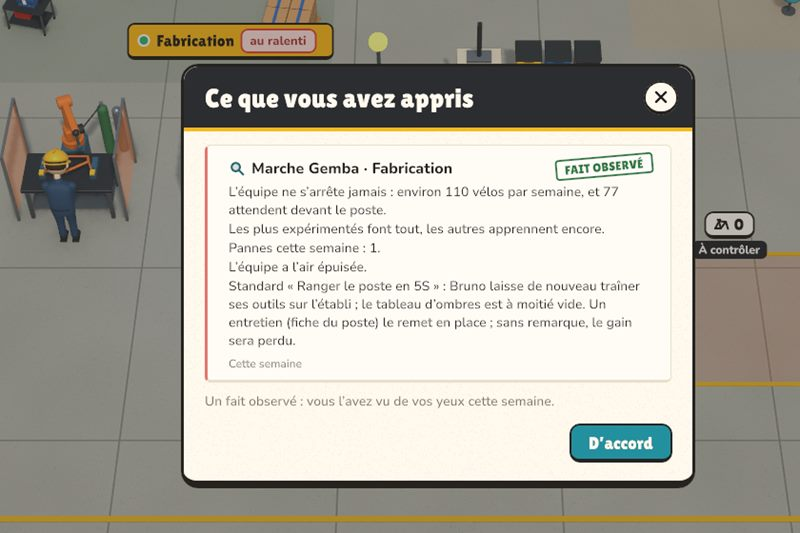
Marche sur le terrain (Gemba), entretiens, chronométrage. Ce que vous voyez de vos yeux devient un fait ; une rumeur reste une rumeur, et c'est parfois une fausse piste.
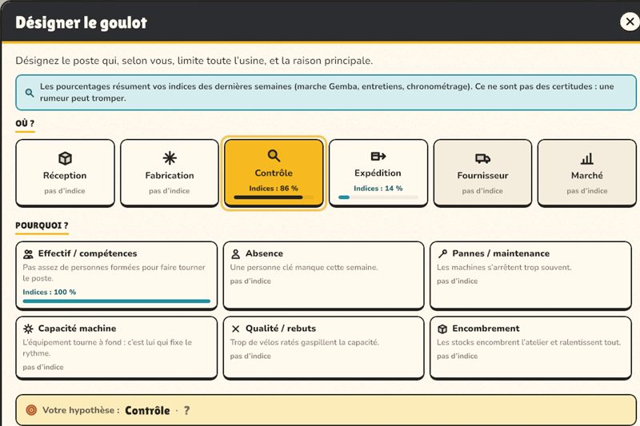
Vous désignez le poste qui limite toute l'usine, et la cause : effectif, absences, pannes, capacité machine, qualité, encombrement. Le verdict tombe en fin de semaine.
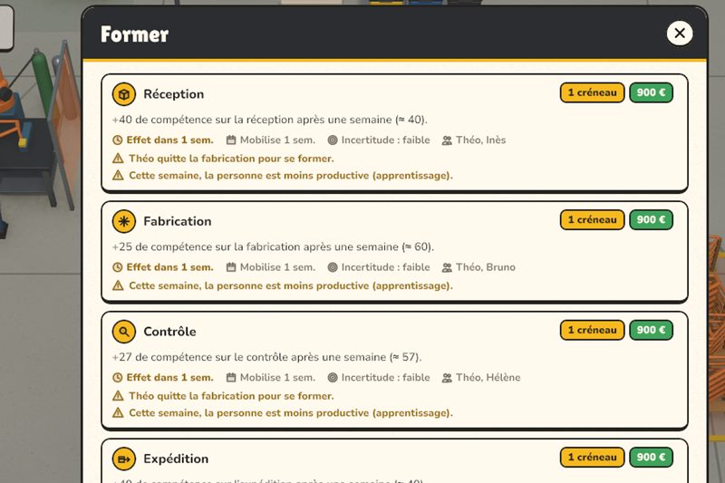
Former, embaucher, déplacer quelqu'un, heures sup, maintenance, lancer au rythme du goulot. Chaque levier coûte des créneaux, de l'argent ou du temps, et certains n'agissent que la semaine suivante.
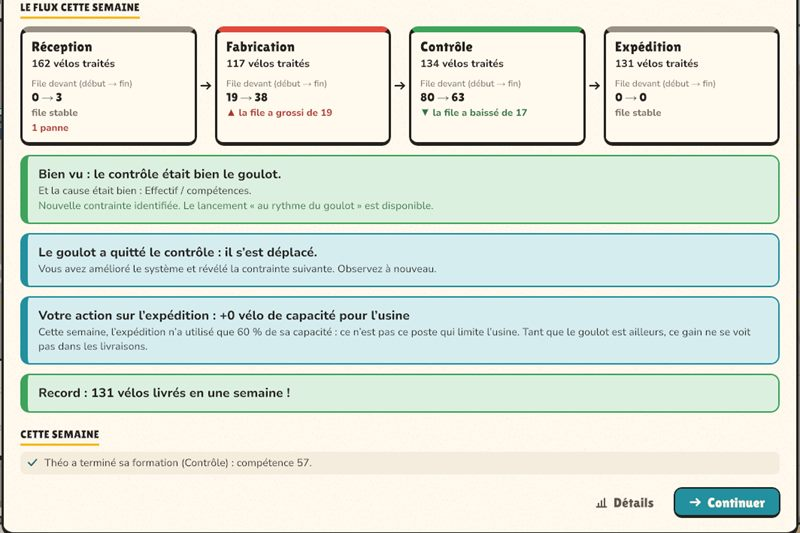
Les vélos avancent poste par poste, heure par heure. Le bilan dit si vous aviez vu juste, ce que vos choix ont changé en chiffres, et où le goulot est parti.
Le flux de l'usine nationale un mardi à 15 h 50, relevé dans une vraie partie : ce que chaque poste a fait depuis lundi, et ce qui attend entre eux.
Faites glisser le flux pour voir tous les postes →
Le plus gros stock n'est pas forcément devant le coupable.
Le plus gros tas dort au magasin matière. Coupable tout trouvé ? Regardez plutôt ce que chaque poste a vraiment fait depuis lundi. Dans le jeu, on va voir sur place avant de conclure.
Parfois, il faut quitter le bureau. Ces moments se jouent en personne, tout à la souris : on y parle, on y négocie, on y promet, et ce qui s'y passe revient plus tard.
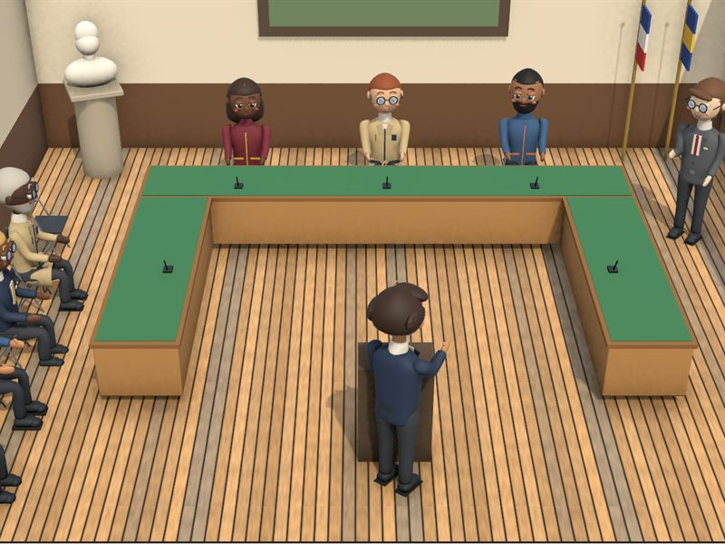
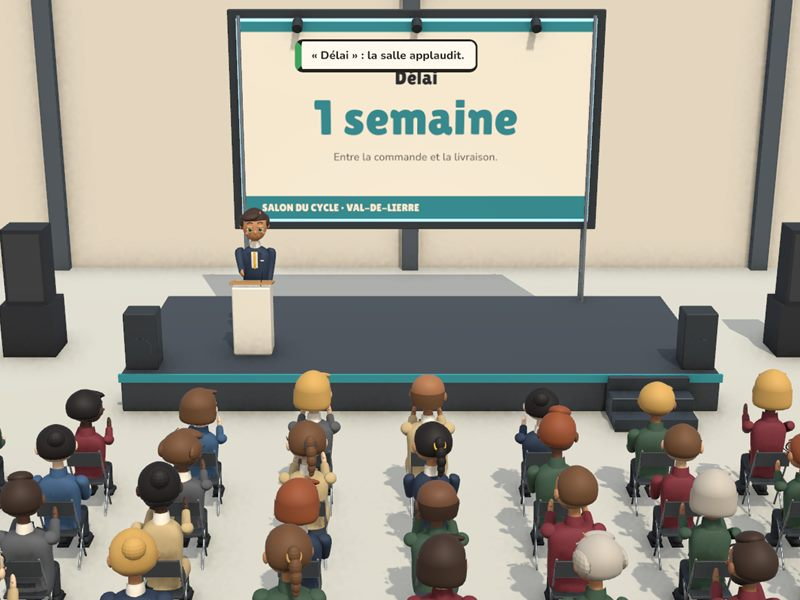
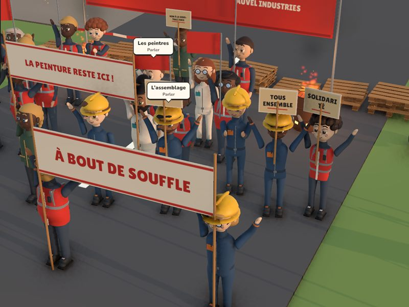
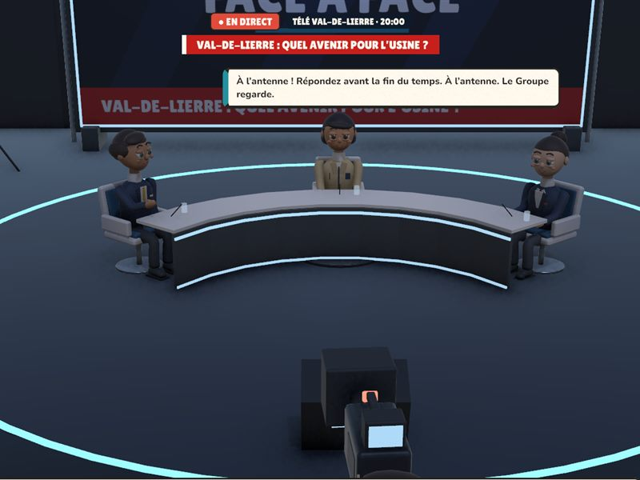
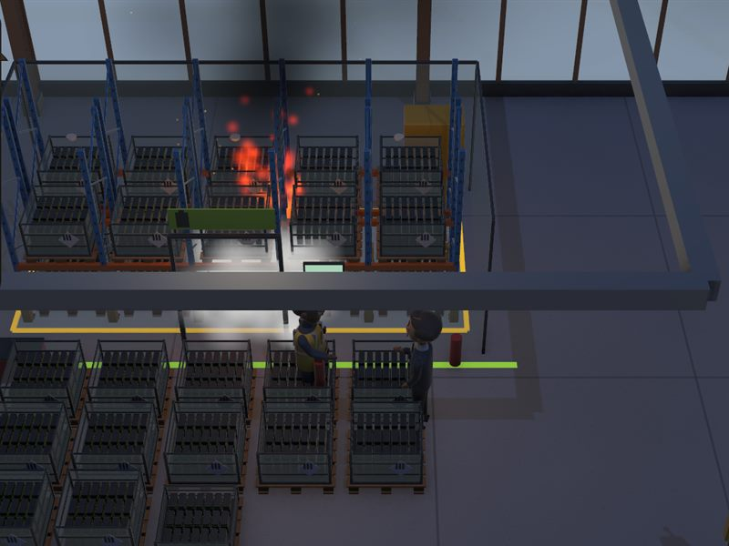
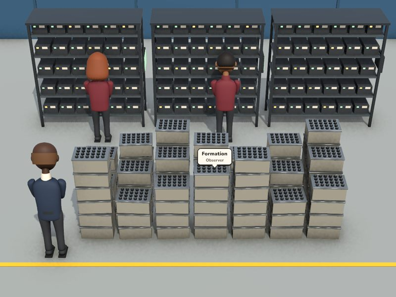
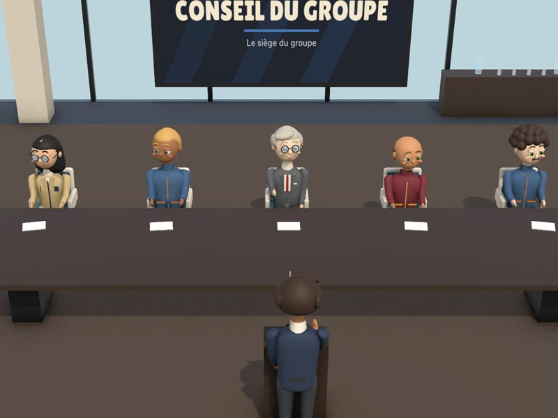
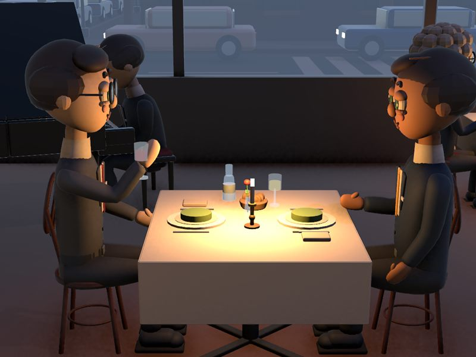
Une bonne décision aujourd'hui peut devenir votre problème de demain.
Le jeu garde la trace de ce que vous signez, promettez et décidez. Un exemple, tiré d'une partie :
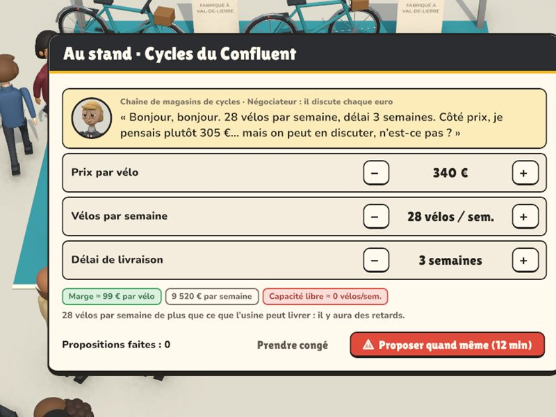
Un acheteur demande 28 vélos par semaine, livrés en trois semaines, et discute chaque euro. Le jeu prévient : il n'y a plus de capacité libre.
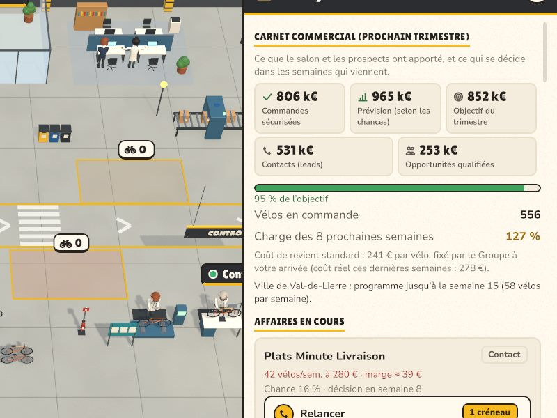
Les affaires du salon se décident au fil des semaines. Le carnet se remplit : 127 % de charge sur les huit prochaines.
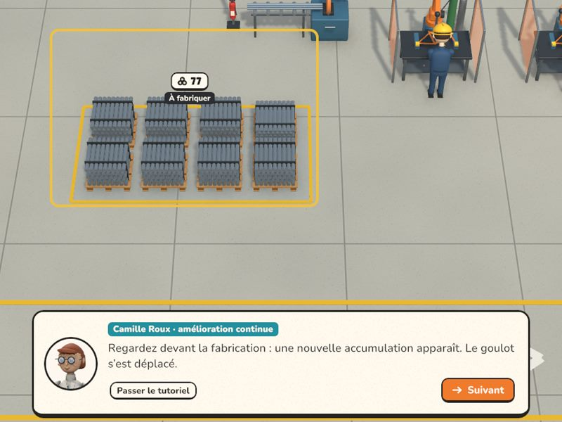
L'usine reçoit plus qu'elle ne sait faire. Une file se forme devant le poste le plus lent, et les retards s'accumulent.
Retards, clients qui préviennent avant de partir, heures sup qui fatiguent l'équipe. Signer était une bonne idée ; tenir la promesse, c'est un autre travail.
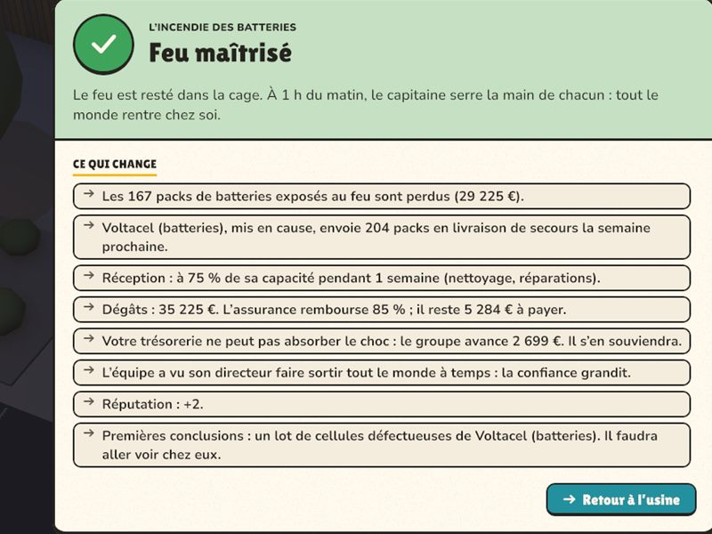
Chaque promotion vous envoie dans une usine plus grande, avec un problème d'un autre genre : ce qui marchait avant ne suffit plus. Vous emmenez quelques personnes de confiance.
Un petit atelier qui livre en retard. Une rumeur vous attend dès l'arrivée : la suivre, ou aller vérifier ?

Une ligne d'assemblage, des absences au jour le jour, des soudeurs habilités. Remplaçants, tutorat, puis le salon pour remplir le carnet de commandes.

Une équipe aguerrie qui ne vous connaît pas, une cabine de peinture capricieuse, des heures perdues à chaque changement de teinte. Et un climat social à surveiller.

La vitrine du Groupe. Les batteries arrivent avec trois semaines de délai, le tableau dit « conforme » quand l'atelier dit autre chose, et le client vient auditer.

Des vélos usagés qui arrivent dans tous les états, sans étiquette. On croit manquer de bras ; il faut trier, préparer des kits, poser un référentiel.

Des vélos cargo sur mesure, des urgences qui pleuvent, chaque service qui accuse le voisin. Planning réactif ou lissé, un stock qui immobilise la trésorerie. Puis le siège.
Le jeu s'ouvre avec une clé personnelle, reçue avec le lien de cette page. Pas encore de clé ? Demandez-en une.
Toujours la dernière version de test.
Windows Installer et lancer
Si « Windows a protégé votre ordinateur » s'affiche : « Informations complémentaires », puis « Exécuter quand même ». Pour le retrouver facilement : clic droit sur FactoryDirector, « Envoyer vers », « Bureau (créer un raccourci) » (sous Windows 11, passez d'abord par « Afficher d'autres options »).
Mac Installer et lancer : rien à télécharger avant, cette ligne fait tout.
curl -fsSL https://zarkyxxx.github.io/factory-director/installer-mac.sh | shEnsuite, lancez FactoryDirector depuis Applications ou le Launchpad. Pourquoi le Terminal : le jeu n'est pas signé par Apple, et macOS bloque un jeu non signé téléchargé par le navigateur ; installé par cette ligne, il s'ouvre directement.
Téléchargez le zip Mac. S'il ne s'est pas ouvert tout seul, double-cliquez dessus dans Téléchargements. Glissez FactoryDirector dans Applications et ouvrez-le. Fermez le message de blocage, puis ouvrez Réglages Système, Confidentialité et sécurité ; tout en bas, cliquez sur « Ouvrir quand même » et confirmez. À ne faire qu'une fois : les mises à jour, faites depuis le jeu, ne sont plus bloquées.
Au premier lancement, collez la clé reçue avec le lien du jeu, par exemple
FD-7KQ2-MX9P-4TRW
puis cliquez sur « Activer ». Il faut être connecté à Internet cette fois-ci. Le jeu s'ouvre, et la clé reste enregistrée : ensuite, il marche hors ligne.
Ensuite, le jeu se met à jour tout seul : quand une nouvelle version sort, le menu propose « Mettre à jour ». Pas besoin de retélécharger ni de réinstaller ; votre clé et vos parties sont gardées.
Une clé est personnelle : elle s'active sur deux ordinateurs au plus (un fixe et un portable, par exemple). Au-delà, elle est refusée ; si vous changez d'ordinateur, demandez à la personne qui vous l'a donnée de la libérer.
Les clés sont données une par une. Dites en quelques mots pourquoi vous aimeriez essayer le jeu : l'équipe vous répondra par e-mail.